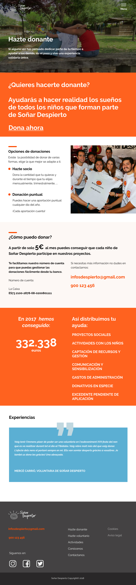
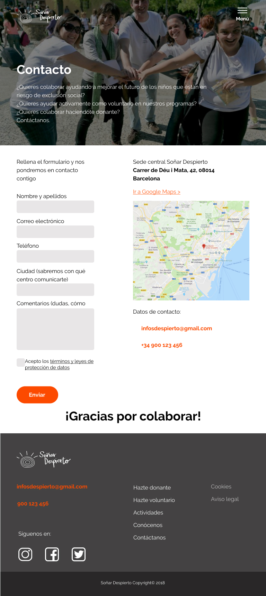

"Soñar Despierto"

Master project of Web Design
BAU Centro Universitario de Diseño de Barcelona
2018
During my experience in the master we were commissioned to redesign and develop a new website for the ONG Soñar Despierto. The objectives were to work with Agile methodology, interactively and incrementally, and design a responsive web for desktop, tablet and mobile. We developed the project understanding the needs of the users, testing the functionalities that we were adding and designing in an attractive way the interface of the pages, starting from the "mobile first". Each user story passed from RESEARCH to DESIGN ending with FRONTEND.




2018 ©Elisa Casto-Graphic and editorial designer|All rights reserved.